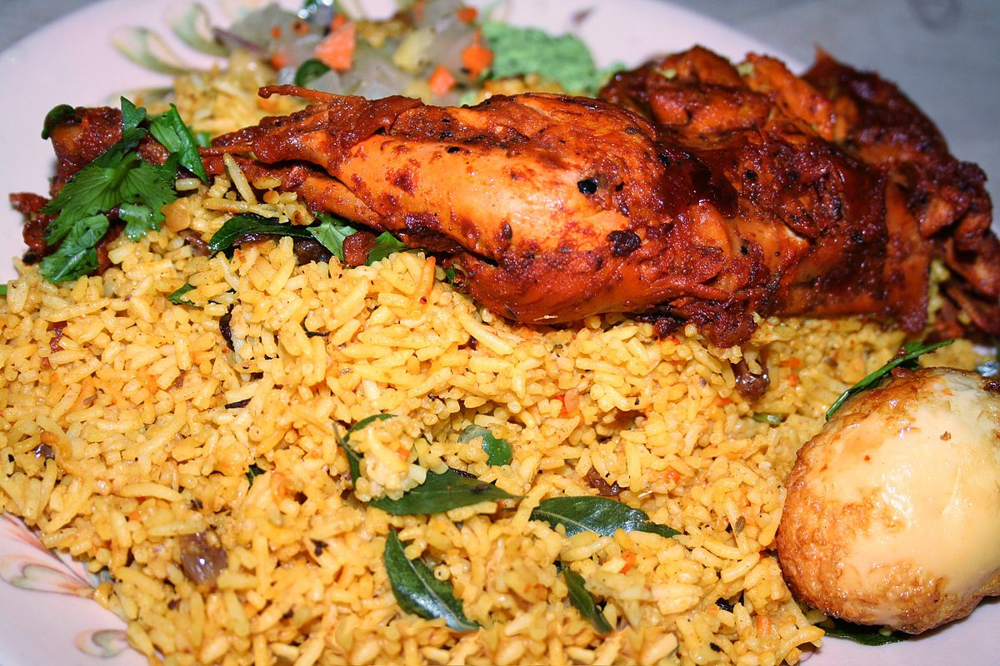

Hyderabadi Chicken Biryani
by, Sanjay(hope you guys like it)

Description :
Indulge your senses with the royal flavors of Hyderabadi Chicken Biryani!
A culinary masterpiece from Hyderabad, this dish is a symphony of tender chicken,
fragrant spices, and saffron-infused basmati rice. Slow-cooked to perfection,
each bite is a journey into the heart of Indian culinary excellence.
Elevate your dining experience with this regal biryani, a true celebration of taste and tradition.
Ingredients :
- Chicken - 500 grams, cut into pieces
- Yogurt - 1 cup
- Ginger-garlic paste - 1 tablespoon
- Red chili powder - 1 teaspoon
- Turmeric powder - 1/2 teaspoon
- Biryani masala powder - 1 tablespoon
- Lemon juice - 1 tablespoon
- Salt - to taste
- Basmati rice - 2 cups
- Water - for cooking rice
- Bay leaves - 2
- Cloves - 4
- Cardamom - 4
- Cinnamon stick - 1 inch
- Salt - to taste
- Onions - 3 large, thinly sliced and fried until golden brown
- Fresh coriander leaves - a handful, chopped
- Fresh mint leaves - a handful, chopped
- Saffron strands - soaked in warm milk
- Ghee (clarified butter) - 2 tablespoons
- Fried cashews and raisins for garnish
- Boiled eggs for garnish
- Cumin seeds - 1 teaspoon
- Coriander seeds - 1 teaspoon
- Fennel seeds - 1 teaspoon
- Black peppercorns - 1/2 teaspoon
- Cloves - 4
- Cardamom - 4
- Cinnamon stick - 1 inch
- Bay leaves - 2
Steps :
- Marinate the chicken:
- Combine chicken with yogurt, ginger-garlic paste, red chili powder, turmeric powder, biryani masala powder, lemon juice, and salt.
- Ensure even coating and refrigerate for at least 1-2 hours or overnight.
- Cook the rice:
- Rinse basmati rice and boil it with bay leaves, cloves, cardamom, cinnamon stick, and salt until 70-80% cooked.
- Drain the rice and set aside.
- Prepare biryani masala powder:
- Dry roast cumin seeds, coriander seeds, fennel seeds, black peppercorns, cloves, cardamom, cinnamon stick, and bay leaves.
- Grind the roasted spices into a fine powder.
- Layering and Dum Cooking:
- Preheat the oven to 350°F (180°C).
- Layer marinated chicken and partially cooked rice in a biryani pot.
- Sprinkle biryani masala powder, fried onions, chopped coriander leaves, chopped mint leaves, saffron-soaked milk, and ghee.
- Repeat the layers and cover the pot.
- Cook in the oven for 25-30 minutes for dum cooking.
- Garnish and Serve:
- Fluff the biryani with a fork and garnish with fried cashews, raisins, and boiled eggs (if using).
- Serve hot with raita or a side salad.